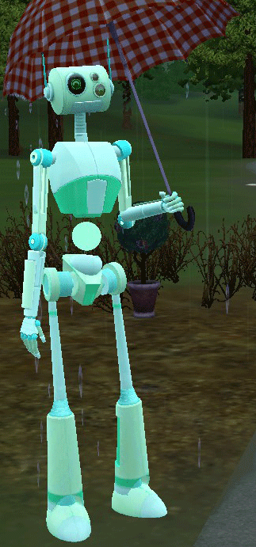

,,Lansați Portalul Timpului și trimiteți-vă Simsii la cea mai interesantă destinație de până acum: o lume cu totul nouă, care există sute de ani în viitor! În timp ce sunt acolo, Simsii își pot construi abilitățile de tehnologie avansată pentru a profita la maximum de tehnologia viitoare. Indiferent dacă Simsii navighează pe hoverboard sau jetpack, călătoresc prin monorail sau lift cu tub sau încearcă coafuri și haine futuriste atractive, există o lume cu totul nouă cu care să experimentați și să explorați. Creați și personalizați Plumbots cu Create A Bot, adăugați-le la gospodărie și programați-le cu o mare varietate de jetoane care le vor altera comportamentul! Sari între lumile prezente și viitoare după bunul plac și experimentează cum acțiunile Sim-urilor tale din prezent pot avea efecte surprinzătoare asupra propriei moșteniri, descendenților lor și chiar modului de viață pentru viitorii Sim!"
🔧Caracteristici🔧
Duceți-vă Simsii în viitor - Pentru prima dată în franciza The Sims, puteți juca cu viața în viitor! Intrați în Portalul Timpului și duceți-vă Sims-urile într-o lume nouă care există sute de ani în viitor, unde pot explora un mod cu totul nou de viață.
Experimentați cu tehnologia viitoare - Asigurați-vă că noile tehnologii pentru divertisment, transport sau casă vor reinventa modul în care Sims-ul dvs. mănâncă, dorm, călătoresc, socializează, lucrează și se distrează. Sim-urile dvs. pot învăța cum să folosească această tehnologie complet nouă în viitor și să-și ducă abilitățile avansate de tehnologie în prezent pentru a profita la maximum de aceste obiecte acolo!

Schimbă viața în viitor - acțiunile actuale ale Sims-urilor tale vor pune bazele pentru moștenirea lor viitoare. Sim-urile tale își pot întâlni chiar viitorii descendenți și își pot schimba destinele prin acțiuni întreprinse în prezent! Cu oportunități de a schimba soarta viitorului, Sims-ul tău se va strădui să creeze o societate ultrautopică sau o lume a haosului?
Spuneți povești noi cu noul Create-A-Bot - Construiți și personalizați o varietate de Plumbots și adăugați-le în familia Sims! Creați „jetoane de trăsături” unice pe care le puteți utiliza apoi pentru a vă programa Plumbots. Cu capacitatea de a deține până la șapte jetoane de trăsături, acești Plomboți sunt obligați să acționeze și să se comporte în moduri surprinzătoare. Ce s-ar întâmpla dacă ați combina jetoanele Robonanny și Sinister Circuits?
Cumpărați și construiți casele viitorului - Futurați-vă casele Sims-urilor cu televizoare holografice, șevalete, plante și computere și faceți fermoar între etaje prin ascensoare tubulare. Instalați uși glisante automate, grădini pașnice pe acoperiș și podele și pereți din sticlă pentru a le oferi caselor acea atingere futuristă perfectă. Casa viitorului este orice vrei să fie!
Jucați-vă cu o lume nouă Sute de ani în viitor - Închideți un jetpack și vizitați o piață comercială futuristă pentru a naviga și a cumpăra cele mai noi gadgeturi și îmbrăcăminte de la o varietate de piedestale interactive. Bucurați-vă de o delicioasă masă sintetizată servită de Plumbots în cafeneaua în aer liber. Luați cariere futuriste devenind dealer Plumbot sau astronom de renume la Observatorul Stelar. Sau, ieșiți afară pentru a explora vastul pustiu - cine știe, Sims-urile dvs. ar putea găsi relicve rare și poate indicii despre ceea ce s-a întâmplat cu oceanul!
Roboti
Simulatorii pot cumpăra Plumbots pre-fabricate și pre-programate. Există o caracteristică „Creați un bot”, accesată prin Atelierul Bot al Reventlov, care permite jucătorilor să creeze Plumbots și să le personalizeze pe cele existente. Plumbotii pot avea până la șapte „jetoane de trăsături”, care le permit să aibă o varietate de caracteristici, abilități și seturi de abilități.
Create a Bot permite jucătorului să personalizeze Plumbot alegând un cap, corp, brațe și picioare. Jucătorul poate colora piesele cu Create a Style. Există un buton „randomize”, așa cum există în Creați un Sim.
Noțiuni de bază (nume, sex și voce)
Prima dintre cele cinci file este Noțiuni de bază. Acesta este locul în care jucătorul alege numele și genul Plumbotului.
Nume: Tastați numele Plumbotului. Jucătorii pot avea până la 13 caractere.
Sex OS: alegeți bărbat sau femeie. Bărbatul (♂) sau Femeia (♀) vor fi folosite ca pictogramă pentru elementele de bază
Voce: alegeți unul dintre cele trei tipuri de voce. Un glisor și butoane indică controlul tonului vocii Plumbotului.
Cap: Jucătorul poate alege un cap din colecție. Culoarea și modelul pieselor pot fi alese de jucător cu instrumentul Creați un stil.
Corpul / trunchiul:
Jucătorul poate alege un trunchi din colecție. Culoarea și modelul pieselor pot fi alese de jucător cu instrumentul Creați un stil.
Arme:
Jucătorul poate alege brațele din colecție. Culoarea și modelul pieselor pot fi alese de jucător cu instrumentul Creați un stil.
Picioare:
Jucătorul poate alege picioare sau un fund plutitor din colecție. Picioarele sunt folosite pentru mers și alergare, în timp ce partea inferioară este folosită pentru plutirea în aer, însă mișcările sunt mult mai asemănătoare picioarelor. Culoarea și modelul pieselor pot fi alese de jucător cu instrumentul Creați un stil.